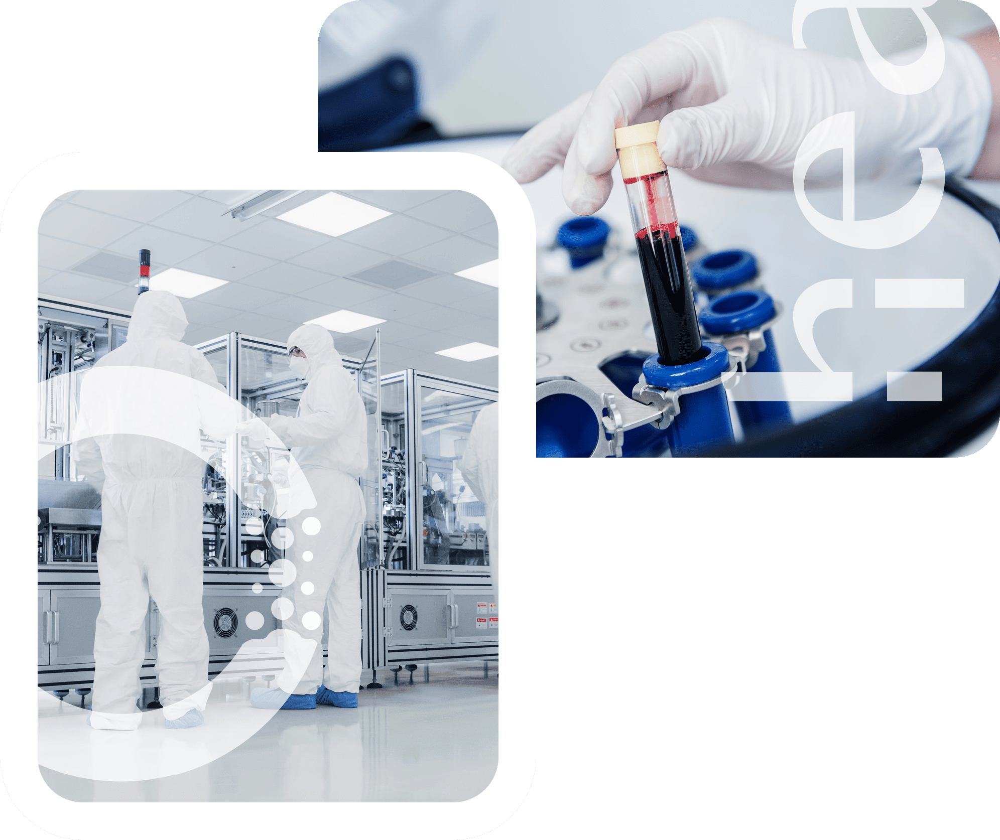
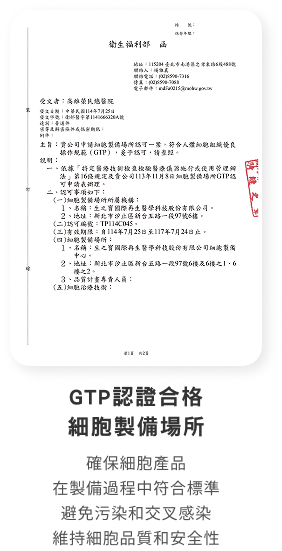
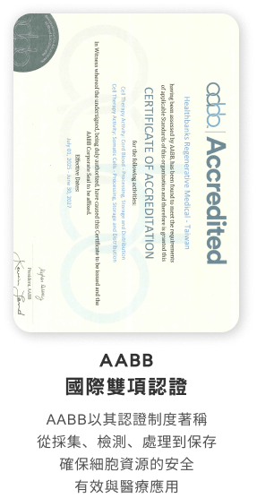
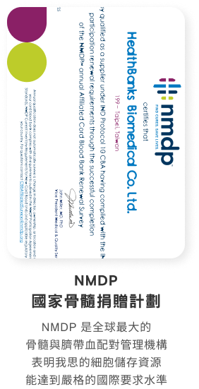
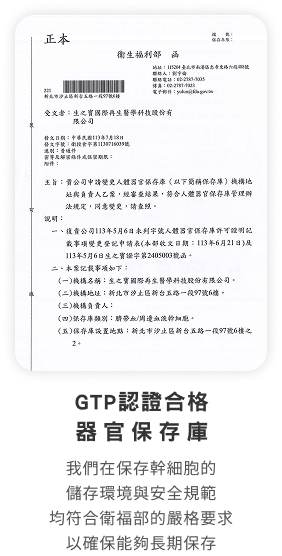
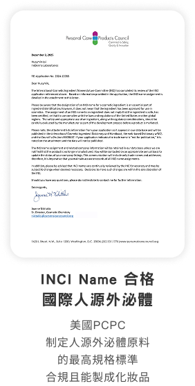
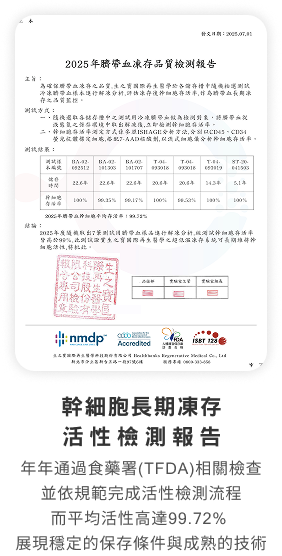
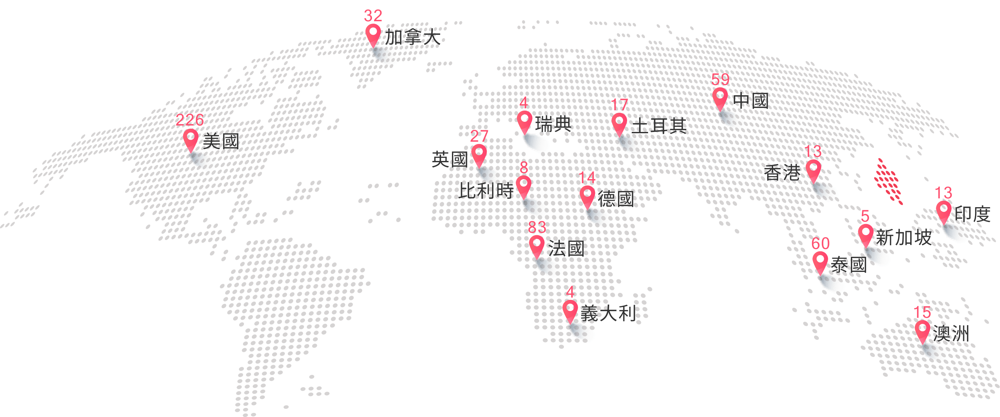

細胞是生命最根本 也最珍貴的資產
我們以細胞為本 為未來預備更多可能
生之寶致力於細胞儲存技術、研究發展與新藥研發，
以專利技術與頂級設備為基礎，
建立專業、獨立、高活性的細胞培養及保存流程，
讓您珍貴的細胞能被安心保存、守護未來。
而在這個再生醫學正興盛的時期，
我們的角色不僅是技術提供者，
更是人類健康規劃的推動者與守護官。
我們透過極其嚴苛的階段檢驗流程以及
標準化的操作與有效的管理，
協助每一份珍貴的細胞資產都能在我們的專利技術
下妥善被保存或是培養應用。
我們也持續投入新藥開發以及與國際接軌，
加強與專業醫療領域和科研團隊的合作，
真正的做到為未來預備更多的可能。
我們推廣：「儲存不是終點，而是開始」。
生之寶理念 Vision
VISION

生之寶項目 Product
生之寶專注於細胞儲存、
品質管理與再生醫學基礎建設，
以專利技術與宏大願景，
建立具專業深度與差異化優勢的細胞資源服務體系。
我們的團隊擁有極具豐富的技術經驗與國際觀，
透過國際認認證實驗室、專利技術與品質控管流程，
確保每一個服務都安全、可靠並值得信賴。
生之寶不僅提供細胞儲存服務，
更有不同於其他技術組織的
檢驗標準、分離技術、前期處理與
優質保存的管理架構，
讓每一位顧客都能享受到最高規格的技術服務。
品質管理與再生醫學基礎建設，
以專利技術與宏大願景，
建立具專業深度與差異化優勢的細胞資源服務體系。
我們的團隊擁有極具豐富的技術經驗與國際觀，
透過國際認認證實驗室、專利技術與品質控管流程，
確保每一個服務都安全、可靠並值得信賴。
生之寶不僅提供細胞儲存服務，
更有不同於其他技術組織的
檢驗標準、分離技術、前期處理與
優質保存的管理架構，
讓每一位顧客都能享受到最高規格的技術服務。
國際認證 CERTIFICATION
生之寶以討戰全球最大幹細胞儲存庫為目標
建構營運必備與技術流程，
導入多項品質檢測與管理標準架構，
確保所有技術都具有合格的專利流程。
差異化優勢：
✓ 國際認可品質保證
✓ 細胞儲存服務遠超市面技術組織
✓ 製程與檢測紀錄可追溯調研
✓ 原料與處理流程透明儼僅
✓ 挑戰亞洲最大幹細胞儲存庫
建構營運必備與技術流程，
導入多項品質檢測與管理標準架構，
確保所有技術都具有合格的專利流程。
差異化優勢：
✓ 國際認可品質保證
✓ 細胞儲存服務遠超市面技術組織
✓ 製程與檢測紀錄可追溯調研
✓ 原料與處理流程透明儼僅
✓ 挑戰亞洲最大幹細胞儲存庫
CERTIFICATION






國際血庫 BLOOD BANKS
生之寶國際標準公庫獲美國聯邦聯邦政府核准，
成為美國國家骨髓捐贈計畫(NMDP)會員，
並加入美國FDA核准之新藥臨床實驗(IND)，
讓我們的臍帶血可以在美境內直接使用的。
生之寶持續上傳臍帶血資料，
挑戰成為全球第一大亞洲血庫，
為更多需要的人提供最寶貴的希望。
生之寶已獲全球國際公庫及組織的認可，
只為提供存戶最好的全球化移植與服務。
成為美國國家骨髓捐贈計畫(NMDP)會員，
並加入美國FDA核准之新藥臨床實驗(IND)，
讓我們的臍帶血可以在美境內直接使用的。
生之寶持續上傳臍帶血資料，
挑戰成為全球第一大亞洲血庫，
為更多需要的人提供最寶貴的希望。
生之寶已獲全球國際公庫及組織的認可，
只為提供存戶最好的全球化移植與服務。
BLOOD BANKS
